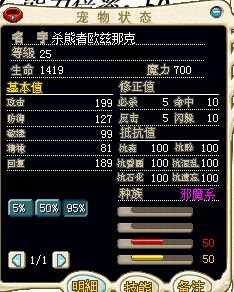
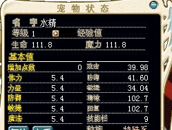
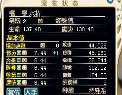
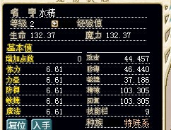

数据化魔力之—成长BP的深入理解【图片补完】
数据化魔力之—成长和BP的深入理解 【图片补完】
——By十年（血瓶）
PS：一直以为这种文章压根没人看，之前两篇简单的也没人回复，结果还真的有人加我QQ，看来还是有人愿意啃的，索性我就把野宠部分的图发上去了
什么是魔力宝贝的数据？数据就是七维六抗四修正、属性种族、等级声望、技能装备等等等这些。这些问题可以分为三大类—角色本身、装备赋予和技能增幅。
如此复杂的魔力数据，是非常难以理清的，但是如果把一个东西理清了，那么这些问题，就会瞬间变得简单几倍，这就是—BP
此次，我就以BP为题目，同时作为整文的线索，揭示魔力宝贝数据罕为人知的一面。
本文假设读者已经有了很强的宠物以及数据功底，如果曾经读过我写的《宠物成长理论以及宠物的选择技巧》，并且能记住7、8成，但不要求熟练应用，应该能够看懂，但如果读者有自信有很强的数据流功底，可以直接阅读本文
第一章 BP真相和补血系数
BP（Basic Point），看英文直译过来就是基础点数的意思，也确实像名字一样，BP绝对是基础中的基础，可以说，人和宠物的数据，就是先生成BP，之后所有的属性都是BP衍生出来的。BP有5个，分别为 —体力 力量 强度 敏捷 魔法，由这5种BP，经过固定的公式，衍生出—生命 魔力 攻击 防御 敏捷 回复 精神 七项直接属性—七维，这七个属性便以数值形式直接出现在各种伤害计算的公式上，也直接反应了人物或宠物的能力。下面是BP和七维的对应关系。
括号内的数值是宠物
生命 魔力 攻击 防御 敏捷 精神 回复 【七维】
体力 +8.0 +1.0 +0.1 +0.1 +0.1 -0.3 +0.8
(+0.2) (+0.2)
力量 +2.0 +2.0 +2.0 +0.2 +0.2 -0.1 -0.1
(+2.7) (+0.3)
强度 +3.0 +2.0 +0.2 +2.0 +0.2 +0.2 -0.1
(+0.3) (+2.7)
速度 +3.0 +2.0 +0.2 +0.2 +2.0 -0.1 +0.2
(+0.3) (+0.3)
魔法 +1.0 +10.0 +0.1 +0.1 +0.1 +0.8 -0.3
【BP】 (+0.2) (+0.2)
你没有看错，人物和宠物的BP对七维的影响的不一样的，这一点，是外界通常不知道，也是我通常不愿意费口舌争辩的，但是这篇文章，讨论内容比较深入，我必须将真相公之于众。
事实上，集中人物和宠物区别的地方，你可以发现，修正在于对攻击和防御的区别。其实这很好理解，这款游戏设计之初，人物所穿戴的装备，增加攻击和防御这两项比较多，然而宠物却没有装备，所以宠物的BP对攻击和防御的增幅会比人多一些。
然而，随着魔力的发展，人物的装备，越来越BT，特别是四修正，导致人和宠物越来越不平衡，穿戴奇迹装备后，宠物的作用越来越不明显，所以才会出现后期的打破平衡的宠物。
今天我们讨论的重点，就是那张BP对七维影响的表格，从里面，我们可以挖掘到很深层次的东西。
首先我们要研究的就是回复。我们知道，无论是传教的圣术、巫师的巫师，还是战斗中吃血瓶，补血的量，都会和回复挂钩，一只回复差的宠物，会成为队伍的拖油瓶，而一个回复差的人，同样也很难堪。我们以补血魔法为例子
补血魔法(神之力)：技能效果→对象一体生命回复。可以回复Lv×60×(回复力％)的生命力
我们可以看到的补血量和回复是成一次线性关系的，换句话说，如果A的回复是B的两倍，那么两者收到同样的补血魔法作用，所加血量就会相差一倍。
其他的补血公式我暂不赘述，毕竟不是研究补血的，但是事实上都大同小异，而且公式中都有（回复%）这一项。关键就是这个，回复/100，这种数字，其实很好理解，游戏设计者，事实上就是以100为分界线，而回复/100，可以理解成一个系数，我们假设K=回复/100，定义K为补血系数。那么K大于100，就是对于补血增幅，小于100，就是对补血减幅。我们发现，当回复为200时候，K=2，双倍补血，而当回复=50的时候，K=1/2，补血减半。
好了，事实上，魔力无论是宠物还是人，如果回复到了50这种境地，这宠物真的不能指望补血了，实在是太差了，而如果到了200，那么补血实在是太简单了！魔力宝贝的设计就是，让100成为平均，150以上很难做到，80以下也很少。很凑巧，1级宠物和1级人物的回复，基本都是100，如果你认为这是巧合，你就大错特错了！
第二章 人物和宠物的1级数据
知识链接：人物刚刚初生的时候，会有30点BP未分配，同时已经拥有：生命20、魔力20、攻击20、防御20、敏捷20、精神100、回复100，BP分配会导致数值变化。
宠物刚刚初生的时候，同样有生命20、魔力20、攻击20、防御20、敏捷20、精神100、回复100，而后会根据宠物的档位进行掉档，而后根据能力倍率得到七维能力。之后获得10点随机档（不懂可以参见宠物理论），每个随机档为0.2BP，一共是2BP，随机分配到5个BP属性上，使宠物数值再次改变，至此1级宠物便生成了。
此处我们以螳螂为例子，解释宠物生成的过程
螳螂 昆虫系 16 44 22 27 11 总120 能力倍率20.
首先，我们根据宠物的档位，也就是满档的情况—16 44 22 27 11，进行掉档，这个过程是完全随机的，假设这只螳螂掉了1血1攻1防1敏1魔，那么档位就会变成—15 43 21 26 10，总数变为115.如果说掉档，就是11111.而后，能力倍率是20，这个20的意思，就是20/100=0.2，也就是说，BP的挡位掉档后要乘以0.2，即为：0.2*（15 43 21 26 10）=3 8.6 4.2 5.2 2
你可能会问，这个数值怎么那么像TL1级的初生BP？没错，如果加上随机档，这就是1级TL的数据了，能力倍率就是如此神奇，它是将档位和BP相联系的桥梁。宏观的理解，能力倍率就是将宠物的挡位，转换成1级宠物的BP值。常规的宠物，能力倍率都是20，很少的宠物，能力倍率是30，而BOSS的能力倍率，可能会上百，而虚弱的雏鸟这种宠物，能力倍率会很低。可以发现，能力倍率只影响1级的数据而已，这也是为什么使魔低级的时候数据很好，但是高级就不行了，因为使魔的能力倍率是30.
哦，别忘了，我们还有随机档！ 3 8.6 4.2 5.2 2，这是没有加随机档的BP分布，我们假设随机档均匀分布，为 2 2 2 2 2，那么随机档给予的BP就是0.4 0.4 0.4 0.4 0.4，加上之前的数字，我们得到最终的BP—3.4 9 4.6 5.6 2.4 OK,这就是这只TL的最终BP了。
根据BP，我们可以换算出这只TL的七维，我们以回复为例子：
回复=100+3.4*0.8-9*0.1-4.6*0.1+5.6*0.2-2.4*0.3=100+2.72-0.9-0.46+1.12-7.2=101.76
七维其他的和回复相似，不再赘述，总之根据BP和七维的关系，我们可以计算出这只TL的七维：98.2 85.8 48.52 39.34 34.50 100.36 101.76
第三章 回复的奥秘
哦，我的天那，事实上讲解宠物的数据如何生成，只是为了讲解回复的一个铺垫而已，无奈这个梯子不搭不行。如果你自认已经搞懂了上面的计算，那我和我一起领略回复力的神奇设计吧！
前面说过，回复会被设计者控制在80-150之间，除非极端的装备或者加点，不然很难逾越。我们回顾影响回复的BP：体力（+0.8）、力量（-0.1）、防御（-0.1）、敏捷（+0.2）、魔法（-0.3），可以发现，体力加成非常高，魔法减少的也比较多，而力量和防御略微减少，而敏捷则适中增加。
说到这里，本文非常重要的一点已经出现，我们知道初生的回复就是100，要保持之后的回复也是100左右，可以大致认为使得BP成长对回复的成长接近抵消。根据上面的关系，我们设体力BP数值为H(Health)，攻击BP数值为A(Attack)，防御BP数值为D(Defence)，敏捷BP数值为Q(Quick)，魔法BP数值为M(Magical)。我们将得到以下公式：
8H+2Q≈A+D+3M
以上公式索性将之称为回复范等式。称等式左边为回复增率R+，右边为回复减率R-。同时得到回复增率的公式：R=（8H+2Q-A-D-3M）/10 （此部分针对宠物）
这个范等式的存在，与其说是我们发现，不如说很可能是魔力当初的制作者设计的。我们知道，如果想让宠物的回复在100上下，就要满足上面范等式，或者等式左右相差不大。我们以杀人螳螂为例子：杀人螳螂 12 45 20 26 17 昆虫系。
R+=8*12+2*26=148 R-=45+20+3*17=116 这是未加点状态下，R1=3.2
当我们选择加攻击的时候，成长变成 12 70 20 26 17
R+=8*12+2*26=148 R-=70+20+3*17=141 R2=0.7
此时的回复增率R，是和档位同一层次的数值，我们可以称为回复档，要将回复档转换为数值，我们需要除以25。R1/25=0.128，R2/25=0.028.由此可见，不加点每级增加0.128回复，加攻后每级增加0.028回复，这些数值都表明了，回复的增量很小，永远接近于100，这就是魔力宝贝原先设计的优秀宠物。（实际应该除24，甚至除TNT，但是鉴于好算，我们就25吧。。尽管这会造成较为明显的误差）
但是如果我们自己设计一款宠物，比如我们希望宠物拥有很高的攻成长和魔法成长，类似于攻魔双修，但是又因为125D的限制，不得不压缩其他档位，得到奇怪宠物的成长档：
双修怪宠 5 50 0 20 50 同时假设加魔，变为5 50 0 20 75 R1=-19.5 ， R1/25=-0.78.好了，100的回复只够这只宠物“享用”130级而已，之后变成0回复，我们知道，0回复的宠物，补血魔法一点血都加不上，毫无疑问，这是一只失败的宠。
即便退一步，我们按照50回复的标准（500血丢上去加250），他也仅仅需要70级就能达到。
以上的例子让我们看到，回复的稳定事实上非常脆弱，设计宠物的时候，要非常小心的往回复范等式上靠拢，不然很容易出现回复不平衡的情况。
顺便提一下，满档的红TL，，满级1704血，回复104，而掉4血的红TL，100级1563血，90回复。我们看到血差了很多，但是回复差出14点，更是让人惊讶。这两只TL的生存能力，相差已经非常可观了.
引申—本章着重介绍回复范等式，揭示宠物设计中保持精神的难题，其实与回复相似的，还有精神，读者如果有兴趣，可以自行推倒出精神范等式
第四章 TNT前辈的杰作—档位表
如果说魔力宝贝数据流的开拓者，你只知道暗月，那么实在是太遗憾了，数据流是无数的前辈合力研究的来的，其中暗月确实做出了划时代的产物—宠物算档器，但是我们还是应该知道，BP掉档理论中，做出了卓越贡献的—TNT前辈。
下面就是TNT档次表
档 | 0 10 20 30 40
----|----------------------------------------------------
00 | 0.000
01 | 0.040 0.460 0.88 1.30 1.72
02 | 0.080 0.500 0.92 1.34 1.76
03 | 0.120 0.540 0.96 1.38 1.80
04 | 0.160 0.580 1.00 1.42 1.84
05 | 0.205 0.625 1.045 1.465 1.885
06 | 0.250 0.670 1.09 1.51 1.93
07 | 0.290 0.710 1.13 1.55 1.97
08 | 0.330 0.750 1.17 1.59 2.01
09 | 0.370 0.790 1.21 1.63 2.05
10 | 0.415 0.835 1.255 1.675 2.095
能够读到这里，并且能够理解那么六七成的读者，你已经非常了不起了，因为这些知识，是很多人，很多年辛苦得来的，仅仅看一遍，确实很难理解，需要时间去积淀和研究。
我们开始进入一个崭新的研究环境。从新开始考虑宠物的成长—何为宠物的成长？宠物的成长，就是每次升级增加的数值！这是最早对于宠物成长的定义了。那么让我们梦回十几年前，和数据流的开拓者同一个思维去思考。
那时候，没有宠物理论，人们对于宠物的判断，大多根据宠物图鉴上的星星，只有少数的经手很多宠物的人，才会发现，同样的宠物，之间相差很多，这些差距随着等级的拉开，会变的越来越大.
经过大量的研究，TNT前辈提出了档次理论。他假设，宠物的成长，是由一个个量子化的、间断的档增加的。如果宠物的成长只有1档，那么就会增加0.040BP，如果有2档，就会增加0.080BP，如果有5档，就会增加0.205BP，不同档会增加的BP值，可以从上面的表格中查阅。
TNT档次表有如下规律和理解：
1、 TNT表是无误、精确的，不存在任何情况的修正。
2、 根据档位表的规律，可以将档位表无限延伸，达到100、150，甚至无限的成长档
情况，同样准确。
3、档位表每相邻十档为一个周期，这十档相比之前的成长，增加0.42BP，平均每档增加0.042BP，我们可以简记为—左右相邻的档数之差一定为0.42BP。
4、1D的成长，和0D相比增加为0.040，这是一个特例，之后每逢1，即11、21、31....X1，相比10、20、30…..X0，所增BP都为0.045，即为逢0增5，同时，逢5、6、10，一样增5，其他尾数都增0.040.所以对于档位表，0、5、6、10是很特殊的数字，正因为十个数中，有6个增0.040，四个增0.045，所以平均增0.042，总和增0.42.
5、五个BP的成长完全独立，互不影响。换句话说，每个BP单独走TNT的档位表，这也是为什么上面的档位表只标到50.
6、更多有待读者思考
TNT前档次表理解后，我们可以重新审视一下所谓“1BP=25档”。从BP表上来看，‘档’本身就是对应着不固定量的BP，所以加1点BP，对应多少档，本身就是不固定的，如果非要计算出来个所以然，其实应该用档位表来计算。但是因为平均档位为0.042，我们求倒数，得到的数值约等于23.81。所以我之前曾经采用“25档=1BP”或者24的计算方式，这也是除了直接应用档位表以外最简单、精准的方式了。之所以用25档，因为更好算，而且误差并不大，相当于0.040BP/档。
我们可以如此相象，宠物的成长，根据TNT档次表，可以完全以手动方式正推，并且只有一个解，那么相应的，通过计算器，可以简化计算，同时，也能知道每一个宠物，也只有一个1级的数值，一个掉档和随机档分布，并且一定有办法倒推出来，这就是宠物档次理论的基石
第五章 掉档的简单分析与加点的选择
因为有了BP—七维关系表和TNT档位表，我们能更深入、微观的了解BP，同时，也让我们能够跳出圈子，宏观的体会到掉档的影响。我们这一章的第一个目的，是带领读者，得到一张非常实用的表格，同时给读者示范对于知识的运用。
表格期望达到的目的：能够反映出宠物掉档对于各个数据的影响。
现在假设宠物A，此宠物为魔力宝贝所有宠物的模型，计算宠物A升级到160级后，掉档对于宠物各个属性的影响
回顾前面的知识我们知道，宠物的1级数据，掉档影响计算，固写出宠物A某BP掉1档后，将会减少0.2BP。
宠物升级159次达到160级，每次升级因为掉档少增加的BP点数，通过TNT档位表的了解，我们知道因宠物而异，但是平均值是0.042BP，在此我们以0.042BP为例子，可知升级159级后，会少增加6.678BP
将1级生成后随后升级少增加的BP相加，我们得到了宠物A某BP掉1档后，少增加的BP—6.878BP
之后，根据BP—七维关系表，我们得到新的掉档—七维表格：
掉档—七维表格（有舍）
生命 魔力 攻击 防御 敏捷 精神 回复 【七维】
体力 -53.02 -6.9 -1.38 -1.38 -0.69 +2.06 -5.5
力量 -13.76 -1.38 -18.57 -2.06 -1.38 +0.69 +0.69
强度 -20.63 -1.38 -2.06 -18.57 -1.38 -1.38 +0.69
速度 -20.63 -1.38 -2.06 -2.06 -13.76 +0.69 -1.38
魔法 -6.88 -68.78 -1.38 -1.38 -0.69 -5.50 +2.1
[掉档/1 6.878 BP]
计算、整理后，将突出部分用黑体标出，我们发现，一些结论：
1、 BP掉档即便经过满级的积累，仍然很难产生质变的差距
2、 体力、力量、强度、速度、魔法五个BP的掉档，分别对生命、攻击、防御、敏捷、精神有较大影响，其中体力还对回复有较大影响。
3、 五个BP对于生命的影响都较大，所以宠物的档位，可以较直观的从生命上判断，其他属性没有这个效果。
4、 掉体力会增加很多精神，相对的，血成长低的宠物，精神会显著的高，防御同理，反之亦然。
5、 魔力、攻击、防御、敏捷四项属性，受非本BP掉档影响较小。
掉档—七维表格的是我们的一个重要工具，接下来，我们继续给出其他结论，以辅助我们对于加点的选择。
如果真的要走到【加点的自主选择】，而非人云亦云，事实上要有很深厚的功底，起码读者要先明确如下的事情。
1、 宠物的魔法，虽然存在303精神完全发挥10级魔法的现象，但是和人物不同的是，宠物的魔法伤害在303精神的时候并没有像人物那样的“伤害激增”，换句话说，300精神和303精神的伤害依然相近。
2、 没有特长的宠物，或许没有人欣赏，但是无法生存的宠物只能当做玩具而不能担当大任，所以宠物的生存能力是绝对考量因素
我定义生存能力的计算公式：
S（生存能力）=H（体力成长）+D（强度成长）+V/4（速度成长除以4）+P（特殊加分）
可以根据这个公式，推导出宠物的生存能力，强烈不建议饲养生存能力低于30的宠物，推荐饲养50以上的宠物。
3、 没有足够的敏捷支撑的攻宠，如同缺少了鼻子的猎犬，虽然依然有些价值，但是绝对是十去其七八，如果攻宠只是指望崩击和合击输出，那不过是饲养了低敏攻宠的人，后悔之余的解脱罢了
4、 没有足够技能栏支撑的宠物，一定会失色不少。对于魔宠来说，更加是致命的，因为魔宠的输出就是来自魔法，而能用针对性的魔法攻击，能够大幅增加输出，反之也会减少输出，500增幅两成是600，减幅两成是400，600和400的差距，甚至是强力魔法2400和1600的差距，这是无论掉多少档、升多少级也无法弥补的。
5、 没有足够防御的血宠，是难当大任的。当血多到一定程度，就需要一些质量了，坎村门口的翠绿菇，相信单刷过的人都记得它的脆弱，比树精难杀多了，但是事实上翠绿菇的体力成长是37之多，而树精只有32，水龙才仅仅36而已。
6、 只有最适合的加点，没有最正确的加点
7、 性价比最高的BP是敏，性价比最低的BP是防，所以几乎任何宠物都可以加敏，但几乎没有宠物适合加防。
当读者掌握了在此之前所有的知识之后，我们可以尝试着，从一个开拓者而非跟随者的角度，去审视，如何对一个宠物加点，我在出题四道，读者可以先得到自己的答案，顺便试一试自己的水平，而后看之后的解说。注意：在于过程和原因，而不在于结果
1、强化丘比特 成长档 21 28 12 42 47 飞行系 技能栏 10 5水5风 掉档：12140
2、水龙蜥 成长档 36 38 34 11 6 龙系 技能栏 7 8水2火 掉档：11141
3、改造烈风哥布林 成长档 26 49 22 22 8 人形系 技能栏 9 地5风5 掉档：21212
4、火焰之刃 成长档 10 39 28 12 31金属系 技能栏 6 火9风1 掉档：11111
请对于以上宠物的加点，给出合理化的建议，并说出原因，对象是手动玩家和FZ玩家两类玩家。因为手动玩家的宠物很难练到高级，所以以100级成长为准，而FZ玩家则以160级为准。
我们先抛开上面的题目，分析一只宠物作为示范。
露比克隆体 成长档：27 22 37 22 57 总成长档：165 技能栏：10 种族：人形系
属性：全3 修正：闪躲5 六抗20
之所以分析这只宠物，因为露比就是最典型的，多种加点方式。道具服的露比加血，就好像螳螂加攻一样理所应当，但是事实上无数的人后期都后悔了自己的加点，我就在这里分析一下这只宠物的加点。
首先，先要以一种审视的态度，观察这只宠物，是否合格，如果宠物太差，那么干脆沦为样子宠了。当然，露比165的总成长档，10技能栏子和全属性，当然是不会沦为那样的，但是我们应该敏锐的发现，相对于57的魔法成长，27的体力成长有些太低了，所以我们立即要做的，就是看一看，露比的回复是不是过关！
通过我们的计算，露比每次升级在不加点的情况下，会增加0.124点回复。敏感的朋友立即的发现问题了，8、1、1、2、3，这组数据应该记住，就是加1点血、攻、防、敏、魔，分别对于回复的影响是+0.8、-0.1、-0.1、+0.2、-0.3。通过这两组数据的对比，我们发现如果是加血、攻、防、敏，露比的回复依然合格，但是如果加魔，0.124-0.3=-0.176，那么每级都会减少0.176的回复，100级就是17.6，我们可以预见，加魔的露比，回复并不高，但是83的回复，也并非难以容忍，可这仅仅是100级而言，如果是160级，就会掉到72回复。补血削减为7成左右，这个数值，FZ党不容忽视，但是对于手动党，则无关痛痒。
接下来，我们再观察，露比的10技能栏，无疑是一个很大的优势，它可以发展成一个非常好的魔宠，甚至可以变成双修、多修的宠物。5闪躲，让露比即便敏捷只有22，也并不用担心自己总是被低敏高攻宠的乾坤“亲到”。
37的防御成长，57的魔法成长，高到什么程度？高到露比即便不加魔，无论血攻防敏任何一个BP，满级的露比都会达到303精神。而303精神以后，宠物的魔法伤害不会再随着精神的增加而增加。
如此，我们第一个加点方法出现了—纯血加点。
既然怎么都能303精神，那么索性，我加血，这样后，露比的弱点—回复一下被弥补，同时露比的生存能力大大提升了，因为露比的全3属性，有着“防御性属性”的特点，可以当做护卫宠，我们计算露比加血的生存能力：27+37+22/4+5（全3属性和5闪躲加成）+25(加点)=100.要知道，即便是水龙加血，生存能力不过是98而已。这个数值，反映了血露比作为护卫宠依然是优秀的。
如此加点的露比，能充当合格的盾牌进行护卫，而大量的技能栏子，能够释放树海魔法清怪，同时偶尔放放蛋二也很有效。高回复无论在练级和PK、任务中也都有很大的优势。
但是血露比有一个弱点，就是露比的属性是全3，这个属性的特点是面对正常的任何属性，都有6%的伤害加成，面对对方的攻击也有6%的削弱，换句话说，自己永远克别人一点点，永远打不出很高的伤害，但是伤害也不会低。或许对于常规魔宠，这样的属性很好，但是对于RMB宠物，比如影舞者女，露比的属性就有些不适合打出更高的伤害，更别说和小龙比了。
总结一句话—血露比的结果，是露比以血为主，护卫和生存能力为特长，和魔法双修，非常适合FZ党。
但是这样的加点方法却很不适用于手动党，因为百级血露比的精神只有275，而魔露比则有355.魔露比的魔法伤害会比血露比强很多，对于手动党来说，露比根本不需要加血，因为露比即便不加血，而是加魔，生存能力也依然超过75，根本没有对于生存能力的担心，可是伤害上，就差的很远了，而且血露比的精神要超过140级才会达到303，这对于手动党简直是噩梦。
可是如果加魔，露比因为本身魔的非常多，加魔之后，即便频繁使用高级魔法，魔也不会捉襟见肘，同时气功弹2级也依然有效，露比能够认真扮演一个魔法炮台的角色。
而且我们要知道，手动党和FZ党最大的区别，就是一个在乎结果，一个在乎过程，一个在乎效率，一个在乎感情。如果说一个手动党练LB到140级，需要2年，那么OK，这两年里，魔露比都是比血露比厉害的，而据我所知，还没有能够手动满级的人出现，最高的是143级。
所以加魔的露比，更加适合手动党
好了，细致的说完了，加魔的露比，我们再说一说加攻的露比。既然满级依然能够303精神，无论加什么，而且露比从来就不缺什么生存能力，那么我干脆加攻，让露比“攻魔双修”，练级时候怪多强力魔法，怪少气功弹，合击的时候也能有更多的输出，这样不是更好么？
是的，我们就要有这样的思路！确实，加攻的露比不但有以上的优点，事实上露比加攻之后，回复也喜人的回到了平衡点，满级露比加攻的回复是104，一点都不拖后腿，并且经过我的亲身体会，攻露比的输出相当的喜人。露比人形系可以学2级气功弹，加攻无疑是让气功弹的优势更大了，甚至在练级中，攻露比单用气功弹，输出比螳螂还要高，因为露比加攻之后力量成长变为47，螳螂加攻后力量成长变为69，要知道攻防240理论指出，240以上的攻击力只有三分之一是有效的，换句话说螳螂的实际伤害并不是69比47这么多，而是更少，但是露比的气功弹，能有一半的机会打出双倍的攻击！
甚至攻露比即便对于手动党，也是未尝不可，因为它有攻击的伤害，魔法虽然不如魔露比，但是依然可以用魔法，因为精神并不是太低，并且有非常可观的魔量支撑！如果玩腻了血露比，可以试一试攻露比！
之后我们再说一说敏露比。敏BP，是出了加体力以外，加血和回复最多的BP，是除了加力量以外，加攻击力最多的BP，是除了加强度BP以外，加防御最多的BP（并列第一），是除了加魔力BP以外，加魔法最多的BP（并列第一），而五种BP中，只有加魔法和防御是增加精神，其它三种都是减少精神，但敏捷BP是这三种中减的最少的。
只有加敏捷BP，速度才会增加2点如此之多，其它的BP，最多增加0.2点，相距甚远。然而速度属性却是七维中对于战斗影响最多的属性。速度直接影响出手先后、闪躲、命中三个重要的战斗因素。相对于七维另外六维有着更多的战局干预性。
并且露比的敏捷，是弱项。22的敏捷成长档，如果加攻，会存在打不中怪物的情况，但是如果加敏之后，这种现象就几乎消失了，甚至你可以大胆的用乾坤，依然有不错的命中率，当然，你如果没事就五级乾坤上去招呼，那敏蜂也会经常失手~
所以我们得出结论，敏露比依然是一种非常好的加点方法，手动和FZ党通用。并且悄悄的说一声，敏露比我也练过，非常好用~
好了，只剩下防御了，其实没有太多可以说的，LB的防御本身37就已经非常的高了，我们应当知道过高的防御，并不好，因为高防御当遇到必杀的时候，容易出现必杀高伤害。LB明显不缺乏精神，加防御而求精神也是完全不需要，加防还对于杀伤没有帮助，更会降低回复，所以加防御的完全是不可取的二货行为。最后我们列一个表格，写一下露比的加点打分
对象/加点 | 体力 | 力量 | 强度 | 敏捷 | 魔法 |
手动党 | 70 | 90 | 30 | 100 | 90 |
FZ党 | 100 | 80 | 50 | 85 | 70 |
自以上我们得出结论—满级露比最强血，百级露比最强敏。
第六章 野生宠物的入门
我的文章，几乎没有触碰过野生宠物的范围，因为野生宠物，研究难度比家养宠物难很多，同时，野生宠物的档次理论需求也越来越低。但是在这篇号称“给数据党看”的文章里，我觉得不提一下，实在是不大合适哎，但是又无奈野生宠物的理论是在太复杂，在此仅仅写一篇入门教程，希望能抛砖引玉。
首先我们要说一下，野宠的范围，我们将BOSS也纳入野宠的范围内，尽管压力山大，但是BOSS确实也算是一种野宠，所以那些小BOSS也自然在这个范围之内。可以从，小到东门的哥布林，大到李贝留斯，都是我们的研究范围。
我们要理清一下，BOSS也有成长档，也有五BP\七维\四修正\六抗。BOSS也有满档和20D。可能读者会问，为何同样都要成长，BOSS这么厉害，人饲养的宠物和野宠，就这么垃圾？
难道答案是成长档高？其实也不是，我举一个例子：
杀熊者殴兹那克 邪魔系 5火5风 档位：82 47 22 12 17 能力倍率：50
以上BOSS资料来自噬生的世界观测者。我们都知道，25级的熊男，相比同级的其他怪物，有着绝对的优势，如果说熊男也是一只野怪，为何他这么强？
有些思维活跃的读者此时或许已经将熊男的数据输入计算器，去模拟熊男25级数据了，我们也做同样的事情。
模拟结果一出现，我们看到，熊男的数据，并不可怕，如果熊男真的这么点数据，或许小号会幸福很多，但是我们看一下实际上熊男的属性吧

我们看到，熊男的真实属性，比我们模拟的强很多，而且我们之前模拟的还是加血的，还没有这个野生混点的血多。
事实上，这个例子只是为了引出一个问题—野生宠物的成长，切记不要用寻常的模拟器模拟，因为野生宠物的成长规律，是不同的！
这里熊男的等级还低，还不算非常明显，一旦BOSS的等级高了之后，这样模拟的差距会越来越大！如果用李贝留斯的成长档去模拟，80级的李贝留斯，也不过是5000多血而已，而事实上却有1.7万血！
事实上，魔物观测者这款计算器，已经内置了野生宠物的模拟，只要在入手等级上，填入相应的等级，就能计算出野生宠物的数据。
现在，我们将宠物的等级开始严格区分，宠物等级分为入手等级和饲养等级。两种状态下成长方式不一样.野生宠物入手后，之后的成长，完全遵从之前的成长理论，而野生宠物的成长，就是我们要研究的重点了。
我们从新拿起一个概念—能力倍率。能力倍率，就是BOSS和一般野生宠物数据相差如此之大的原因了。对于家养宠物，能力倍率只影响宠物1级数据的生成，但是对于野生宠物，能力倍率一直影响宠物的成长！
我们广义的讲，能力倍率就是负责无人干预情况下，宠物的成长，而宠物的1级生成，也是无人干预的。
另外我们再拿起一个概念—随机档。随机档共10档，每档0.2BP，一共2BP，随机分配到宠物的五项BP上，随机档也只对宠物的1级数据有影响，但是对于野生宠物，随机档并不只限于1级出现！
野生宠物的成长，是先按照和普通宠物一样的方式，生成1级宠物，之后按照野生宠物的成长方式，生成相应等级的宠物
野生宠物的成长，是每升1级，都根据野生宠物的档位，分配等比例的成长seed，同样，每升1级，都会再分配一次随机档。我们可以理解为，野生宠物每次升级，都经历好像1级宠物的过程，我们知道1级宠物的属性，是和能力倍率有直接关系的，所以野生宠物每级的成长都和能力倍率挂钩。
第七章 野生宠物的计算
上一章我们基本把野生宠物成长影响的元素都说出来了，主要是因为野生宠物成长一般人比较生疏，所以通过一章的内容给一个铺垫，方便读者理解，这一章就更为深入，沾染数字了。希望读者自己多理解，有些难度
为了方便理解，我们将两个公式对比，化简成相似的形式，给出下面的总BP公式 ，假设宠物等级为N，总成长档为D，能力倍率为K，Seed为档位表，seed为系
家养宠物：D*k/100+2+（N-1）D*Seed+（N-1） ①
野生宠物：D*k/100+2+（N-1）(D+10)* seed ②
这两个公式，事实上不是严谨公式，其中家养宠物中的Seed，只为简化公式。
我们可以将公式拆分
D*k/100+2+（N-1）D*Seed+（N-1），其中D*k/100，是计算未分配随机档时候的1级宠物BP总数，后面的2BP，当然就是随机档BP，而（N-1）D*Seed，当然就是宠物升级了，N-1，就是升级的次数，而Seed，事实上代表了TNT的档位表，意在相应的多少档位，我们在TNT的档位表上，找到能够加多少BP，这就是宠物成长过程中增加的BP，而最后的（N-1），就是指人加的点数了。
而野生宠物的公式，我们同样的拆分，D*k/100+2+（N-1）(D+10)* seed，我们一样能找到1级宠物生成的痕迹—D*k/100+2，这部分我们不再赘述。接下来我们看野生宠物的成长，这个公式—（N-1）(D+10)* seed，（N-1）是等级很好理解，那么接下来的(D+10)* seed，就是每级的成长了，（D+10），不同于家养的D，同样，在这里，Seed和seed并不一样。上一章已经说过，野生宠物每级都有随机档，但是这个随机档的单位不再是0.2BP，而是seed。野生宠物的seed值，同样不是单一值，但是幸好，他不是一张表，而是只有六种情况。
我们将野生宠物的seed，称之为系，seed有六个可能，分别为0.045、0.044、0.043、0.042、0.041、0.040。我们将0.045称之为0系，0.044称之为1系，以此类推，0.040称之为5系，命名正好和小数的尾数相反。通过野生宠物的成长公式，我们很容易知道，seed越大，BP越多。
我们对比两个公式，我们发现两式的差距，1中的（N-1）单项，2中没有，2式想要通过10*seed弥补，同时，seed和Seed值也不相同。
理论要联系实际才有用，才能深刻，我们非常有必要举一个例子，例子就选水精。
水精 特殊系 25 25 25 25 25倍率：20
我们选取1级的，满档，随机档为22222的水精作为样本，此时水精的属性为：

此水精，我们标记为水精1.而后我们将饲养升级并且加血的水精，标记为水精2，将野生状态下2级的水精，标记为水精3.
现在我们来计算水精2的属性：
水精的所有成长档都是25，根据TNT档位表，可知增长1.045BP，所以原先的全部5.4BP，变成之后的全部6.445BP，升级加1点体力而后，根据五项BP值，我们可以通过本文最开始的BP七维换算表，算出宠物的余下所有数据

细心的朋友可以看出来，魔物观测者的BP部分，精确值只有0.01，实际的6.445BP，只写出了6.44。所以从魔物观测者，我们并不能得到实际的总BP，这也告诉我们一件事情—工具是方便人的，但是无法代替人。
我们通过计算得到水精2的总BP值为33.225.之前的水精1的BP值，是27，我们得到结论—家养水精升级增加了6.225点BP

这只是野生水精3的一种情况，魔物观测者是有模拟野生宠物的能力的，但是仅仅会给出一种情况，根据之前的知识，我们知道，因为野宠在升级的时候，会依然有随机档分配，所以即便是2级的野生水精，也会有多种情况出现。
但是这不妨碍我们总结BP，我们用手算一下检查这一次魔物观测者是否出现了误差：
以零系0.045为例，升级后增加(D+10)* seed的BP，即为135*0.045=6.075
因为魔物观测者给的情况即为完全平均情况，所以得到每个BP的值均增加1.215，加上之前的5.4，即为6.615。好了，我们发现，实际值是6.615，但是魔物观测者上只写了6.61，很明显魔物也是用了类似取整的算法，舍弃小数点后第三位。我们通过自己的计算，得到总BP值—33.075
现在是对比的时候了！
宠物 | 总BP | 升级增加的BP |
水精1 | 27 | —— |
水精2（家养） | 33.225 | 6.22 |
水精3（野生） | 33.075 | 6.075 |
结论已经显而易见，野生的水精，会比家养的BP缺少0.145.这仅仅是1级而已，如果野生水精是100级，那么就少了14.5BP，这还是0系的情况，如果是1系会少更多，更别说5系了。
这还仅仅是缺少BP的情况，事实上，野生宠物升级的随机档分配，类似于升级随机混加，这个混加不同于我们的混攻敏、混血魔，而是五项BP同混
在掌握了以上的计算之后，读者可以自行根据以上的理论，推理出很多有意思的结论，在此以题目的形式给出，题目难度阶梯状上升，一步步引导：
1、 从理论上，野生宠物的BP值可能超过家养宠物，为什么？
2、 从理论上，魔力宝贝宠物的总成长档最高是多少，为什么？
3、 从理论上，魔力宝贝宠物的单项最高成长是多少，为什么？
4、 将你对1、2小问提出的问题解答后，将超过最高档位的数据宠带入魔物观测者，将发现计算器错误，为什么？
如果读者能够对于上述问题有了让自己认为心服口服的回答，那样就算是达到了我希望读过本文后，读者能达到的宠物理论水平了
结尾的话
魔力早已经不是当年那个魔力了，不知道整天捣鼓这点数据的还有几个人，这篇文章成文的时候我几经犹豫，因为在我看来，这种文章确实不会有太多人看了，即便是之前的《宠物理论》（宠物成长理论以及宠物选择技巧）和《数据化魔力之属性与种族》，估计也没有太多人能看下去，何况这篇更难的了。
如果谁真的很喜欢这种文章，认真读过我的文章后，或许愿意和我一起探讨一下，Q2538782009。
另外在最后，鄙视一下法兰城大街上刷宠、刷屏的人，说实话，这种完全不顾大家感受的败类，无论喊得是什么话，有多冤屈，都不值得信任，这种败类的话能信？何况摆的还是骂人的宠，多少新人上线就掉？多少人摆摊的地方都被占了？脆弱的魔力，禁不住折腾了。
2014.7.30 By十年（血瓶）
szmake2002
贡献度：10
顶！！！
ＫＩＮＧ
贡献度：5830
有人坚持研究就会有人看的！
十年（血瓶）
贡献度：3620
回不到以前了，我也找不到再钻研这些东西的热情了，我发现对这个东西感兴趣的，全都是做游戏的业内人员，他们吃这碗饭，哎
似乎没有人纯粹的因为爱好喜欢研究这个呢。。。即便是我，也没时间了。。。
二十六
贡献度：0
逮到作者!06年那会宠物观察者出来前,当年自己做了个宠物模拟器,前前后后读了很多遍暗月的文章才懂,.现在再你这边文章,第四章开始读了3遍还是不太理解, 佩服!确实是没有了以前的热情
cryptic
贡献度：0